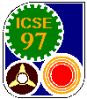

|  |
Invitation to Submit and
Submission Categories |
ICSE 97 Program Committee
The annual International Conference on Software Engineering (ICSE) is
the leading forum for the exchange of ideas on all aspects of software
engineering. ICSE 97 invites you to submit work to share with the
ICSE community.
Different classes of contributions are sought, ranging from
research papers to lessons and status reports from software
engineering organizations. The ultimate goal is to build a rich and
comprehensive conference program that can fit the interests and needs
of different classes of attendees: professionals, researchers,
managers, and students.
Submissions at a Glance: Technical Program
| Participation Category
| Description
| Deadline
|
| Workshops |
Discuss focused topic in a small-group setting |
15 June 1996 |
| Papers |
Report research or practical experiences |
2 August 1996 (electronic abstract)
9 August 1996 (full paper due)
24 February 1997 (final copy due)
|
| Panels |
Discuss and debate pressing issues |
2 August 1996 |
| Tutorials |
Teach Software Engineering techniques and theory |
2 August 1996 |
Software Engineering in Organizations:
Lessons and Status Reports |
Summaries of work taking place in
institutions, organizations, or groups |
16 September 1996 |
| Research Demonstrations |
Present demonstration of research tools |
1 November 1996 |
| Doctoral Consortium |
Ph.D. students share their work |
1 November 1996 |
| Posters |
Present late-breaking results and ongoing work |
15 February 1997 |
Choosing a Participation Category
If you are unsure of which category to submit to, please consult the
Program Coordinators or the Co-chairs in charge of specific events you
may be interested in.
Multiple and Related Submissions
You may prepare as many submissions as you like in the same or different
categories. In a given category, materials should be presented only once.
Reaching the Entire Software Engineering Community
ICSE 97 encourages participation from the entire Software Engineering
community in the following ways:
- International Relations
Co-Chairs represent ICSE communities from America, Asia,
Australia, and Europe and may be contacted to obtain more information
on any aspect of participation in the Conference.
- Conference committees are composed of individuals from a variety
of countries and disciplines.
- Mentoring is available
- Guides to successful submission and answers to frequently asked
questions are available. Please see individual submission categories for
details on where to find this information.
- For the Technical Program, the technical merit of submissions is more
important than the quality of the English used in the submission. However,
the quality of English may be a key determinant in a paper's acceptance:
the better your English is, the more readily your ideas communicate.
Submitters are encouraged to find a native speaker of English to help edit
the submission or ask for an ICSE mentor.
Topic Areas
ICSE 97 encourages submissions from the many perspectives that contribute
to the whole of Software Engineering. We particularly encourage papers
addressing topics wherein software engineering issues play a key role, but
where those topics have not been highlighted in previous ICSEs. We
encourage discussions of both the process and outcome of research, design,
engineering, development, installation, use, and maintenance. Examples
include:
- Requirements engineering. Acquisition, modeling, specification,
prototyping, and analysis requirements.
- Software architectures. Domain-specific software architectures, evaluation
of architectures, architecture description languages, supporting
environments, architecture development approaches, and marketplace issues.
Issues with specific architectural styles, such as client-server,
event-based, and blackboard architectures. Development of architectures.
- Hypermedia. Establishing and navigating links among disparate artifacts.
Use of hypermedia in software development and evolution. Configuration
management of hyperwebs used to support software evolution. Navigation
paradigms.
- Design. Design methods and strategies, languages, and evaluation of
designs. Design patterns.
- Reuse. Technologies, tools, and strategies for developing reusable
software. Issues in changing organizations to support and reward reuse.
Legal issues.
- Object oriented technology and patterns. Development and specification
of interfaces, encapsulation issues, changing the interfaces over time,
adapting components. Codification and regularization of standard solutions
to typical problems.
- Programming languages and software engineering. Language issues in
component description and implementation. Dynamic components. Generic
components. Language issues in system evolution. Language issues in
software deployment (a la Java).
- Knowledge-based approaches. Applications of automated reasoning, knowledge
representation, and artificial intelligence techniques to software
engineering problems. Techniques may be fully automatic, may support, or
may cooperate with humans.
- Information retrieval, digital libraries, and information systems design.
Software engineering issues inthe construction or use of information
retrieval systems and digital libraries, including issues of filtering,
routing, and integration with other aspects of an enterprise's computing.
- Mobile computing and mobile applications. Design issues, dynamic languages
and application architectures, quality assurance, configuration management,
deployment, and operations management.
- Reliability. Development of operational profiles. Reliability models.
Assessment of value.
- Formal methods. Formal approaches to specification; Information
retrieval,
digital libraries, and information systems design. Software engineering
issues in the construction or use of information retrieval systems and
digital libraries, including issues of filtering, routing, and integration
with other aspects of an enterprise's computing.
- Testing, analysis, and verification. Algorithms, techniques, and
processes concerned with assuring, developing, or assessing software with
respect to requirements or goals. development, analysis, and testing.
- Reverse engineering and program transformation. Incremental approaches to
dealing with legacy software.
- Environments: organization and integration principles. Object management
support, language-directed tools.
- Software process: modeling, analysis, execution, evolution. Formalisms and
support tools. Integration with environments. Empirical evaluations,
identification of processes through empirical means.
- Process improvement. Strategies, approaches, and experiences in enhancing
organizations' corporate abilities. Process assessment strategies.
Demonstration of benefits.
- Workflow, computer supported cooperative work (CSCW) and software
engineering. Supporting and coordingating teams of software engineers.
Workflow and process specification and execution.
- Project management. The relationship of organizational structure to
product characteristics. Tools for management support. Team
restructuring, and relation to software processes and process technology.
- Measurement, metrics, experimentation. Integration of metrics gathering
and evaluation into processes. Experimental paradigms for software
research. Integration of multiple metrics.
- Special techniques for information systems design.
- Distributed and parallel systems. Special software requirements, design
issues, and real-time and safety-critical systems.
- Software documentation. Documentation in an era of the Web and multimedia.
Video and audio documentation. Information retrieval issues and
approaches to software documentation.
- Application of artificial intelligence techniques. Design environments,
evaluation agents, knowledge-based approaches.
- Human-computer interaction (HCI). The role and relation of HCI research to
requirements engineering, usability assessment. User involvement in system
specification, design, and implementation. Ethnographic studies and
software development.
- Technology transfer, education. Software engineering curriculum design.
Teaching issues of large-scale systems in the classroom.
- Standards and legal issues. De facto and unofficial "standards".
Evolution of standards in a highly dynamic world. Standards formation
processes. Recent and influential standards from OMG and others.
- Interoperability. Between languages, frameworks, platforms, components,
processes, object repositories, and environments.
- Module interconnection languages. MILs and rapid prototyping. MILs and
software architecture research.
- Configuration management. Version control and system evolution.
Integration of configuration management tools with environments.
Language of the Conference
In keeping with the international character of ICSE 97, the written and
spoken language of the conference is English.
Quality
For an ICSE submission to be accepted you must say something
significant. All submissions should address the following:
Content
- State your message clearly.
- What methods did you use and why?
- What are your findings or what are the issues? Be specific regarding the
status of any software systems discussed.
- Review the literature carefully. Please read and cite relevant
material from previous ICSE Proceedings, journals, and other
conference proceedings.
- Identify the innovative aspects of your work clearly.
Consequences
- What should the audience do differently if and when they have
accepted your message?
- What are the directions for future work based on your work?
Review Process
All submissions will be reviewed by the technical area Co-Chairs and their
committees. Submissions will be evaluated according to accepted ICSE
standards of excellence. If you have questions about these standards,
please see information in the individual submission categories, retrieve
the additional electronic documents mentioned there, or contact one of the
Co-Chairs.
If you need further help, please request an
ICSE mentor.
Publication: Conference Proceedings
Accepted papers and other material (see details in the various
participation categories) will be published in the ICSE 97 Conference
Proceedings. The Proceedings is a citable archival source: it will have an
ISBN number and will be available for sale through the ACM and the IEEE
Computer Society.
Every year ICSE submissions from people unfamiliar with the ICSE community
are rejected because authors do not understand the expectations for an ICSE
submission. We are consequently missing many interesting viewpoints. If
you are not familiar with how to write a good ICSE submission, please ask
for a mentor. A mentor is a person who helps you learn something
unfamiliar through a personal one-on-one relationship. Ask for a mentor by
contacting one of the Program Coordinators through electronic mail, fax, or
phone.
If you want to ask for a mentor we will need to hear from you no later than
10 weeks prior to the submission deadline for the chosen category. We
highly recommend that you request a mentor even earlier.
You may need a mentor to help you choose a submission category, or to help
you figure out how to prepare your submission, or both. The mentor does not
prepare the submission for you but helps you do a better job of it
yourself. The mentor addresses questions such as, but not limited to:
- Are the issues addressed relevant to the ICSE community? How
could the work be made more relevant?
- Is the work adequately related to and differentiated from
other relevant work that ICSE community members are likely to be
familiar with?
- Is the information given about methodology and results at
the right level of detail and rigor for an ICSE audience?
We expect mentoring will be most useful for participants that have not
traditionally contributed
to ICSE (e.g., from a particular application domain). However, mentoring
is available to any submitter on a first come, first serve basis. Please
note that there are no guarantees that participating in this program will
ensure that your submission will be accepted by the review committee. The
mentoring process is completely independent of the review process.
The mentor does not become a co-author. The mentor need not appear in the
acknowledgments of an accepted submission, as mentoring is a private matter
between mentor and submitter. In the Proceedings, we will have a page
listing those who mentored to acknowledge their contribution, but
acknowledgment is completely separate from an individual submission.
We have limited resources (volunteers) available, so mentors will be
assigned on a first come, first served basis. Act early, since the feedback
given by the mentor may suggest extensive modifications to the submission,
which cannot easily be done at the last minute. Mentoring is available to
submitters in all participation categories covered in this Call for
Participation.
<icse-97-webmaster@ics.uci.edu>
1997 International Conference on Software Engineering
Last modified: 27 Aug 1996